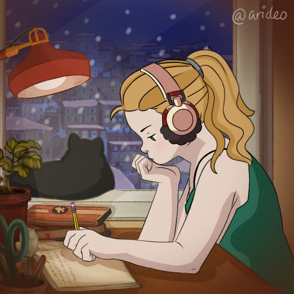

Jag heter Evelina, är 24 år gammal och bor i Stockholm.
En av mina hobbies är att skriva och hitta på berättelser. Jag skriver mina berättelser på engelska och har lagt upp mina berättelser på internet sedan 2016. De flesta handlar om någon form av fantasy eller sci-fi.
Det började som ett intresse när jag så att andra skrev och la upp berättelser på internet och jag ville prova för att det så kul ut. Sedan utvecklades det till en stor passion och jag har hållt på i snart 6 år.
Jag har också ett stort bok och läsintresse. Mina favoritböcker handlar oftast om fantasy och sci-fi, men jag gillar också humor, fakta och biografier.

Detta är några av mina favoritböcker, i ingen specifik ordning.
- Percy Jackson och Olympierna/Olympens Hjältar - Rick Riordan
- Good Omens - Neil Gaiman & Terry Pratchett
- HeartStoppers - Alice Oseman
- Ja, jag har Mens, hurså? - Clara Henry
- Ibland mår jag inte så bra - Therese Lindgren
- Ensam på Mars - Andy Weir
- Fangirl - Rainbow Rowell